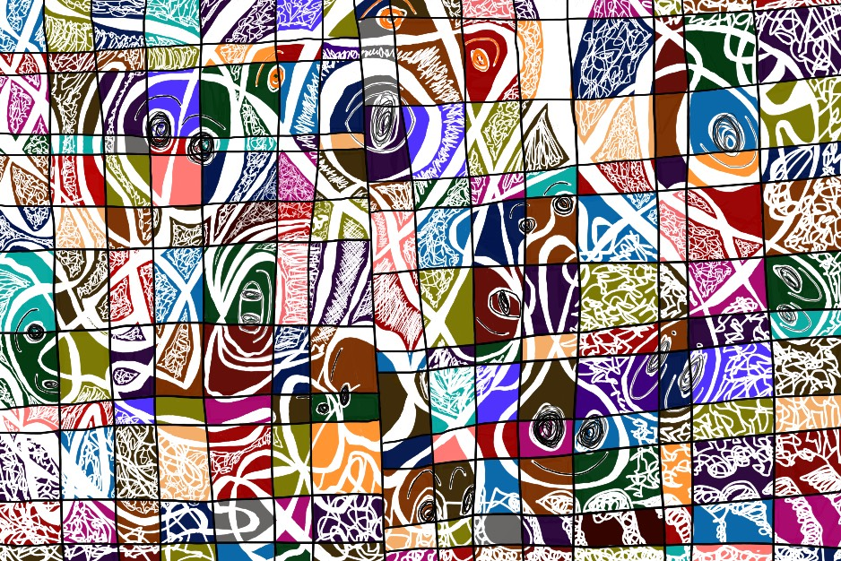
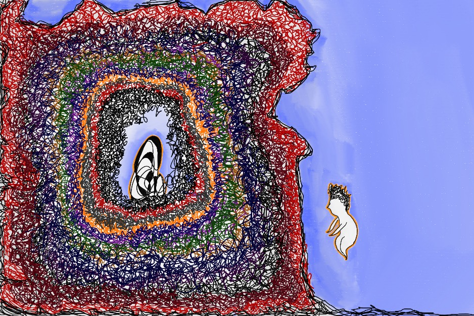
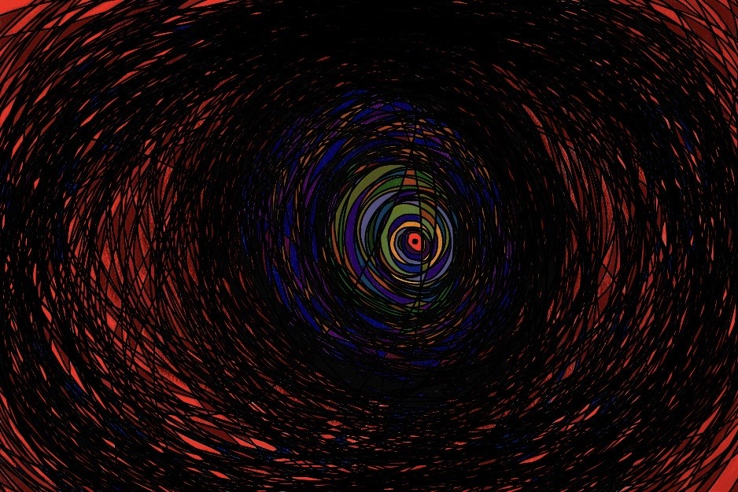

Crafting worlds
through sound & code
I'm an interdisciplinary creator pursuing an MFA in Music Technology / Creative Computing at the California Institute of the Arts, following a BFA in Interdisciplinary Computing and the Arts from UC San Diego.
My work explores the intersection of sound, code, and interactive media.I design systems and soundscapes that respond to the world around them — shaped through code, guided by physical processes, and grounded in the belief that sound is the most emotional dimension of any experience.
Alongside my creative practice, I bring over four years of professional experience in recording, mixing, post-production, and live event A/V, which has shaped my ability to work fluidly within fast-moving, collaborative environments.





Find me online